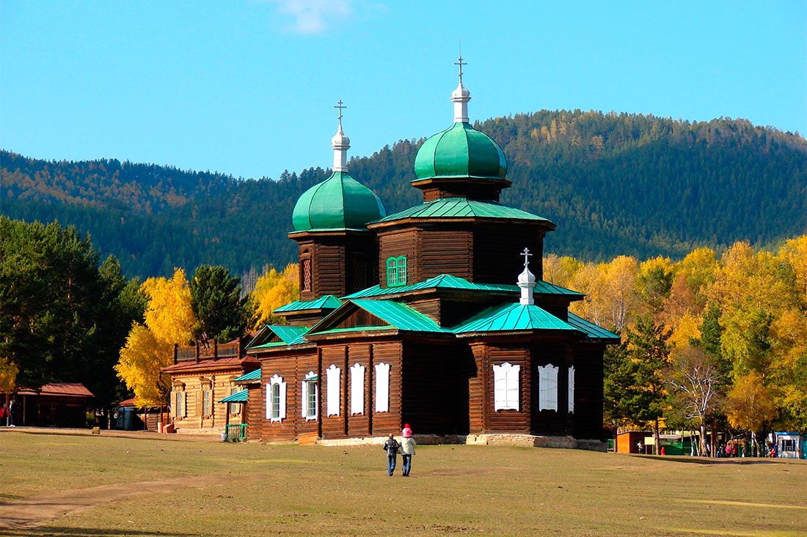
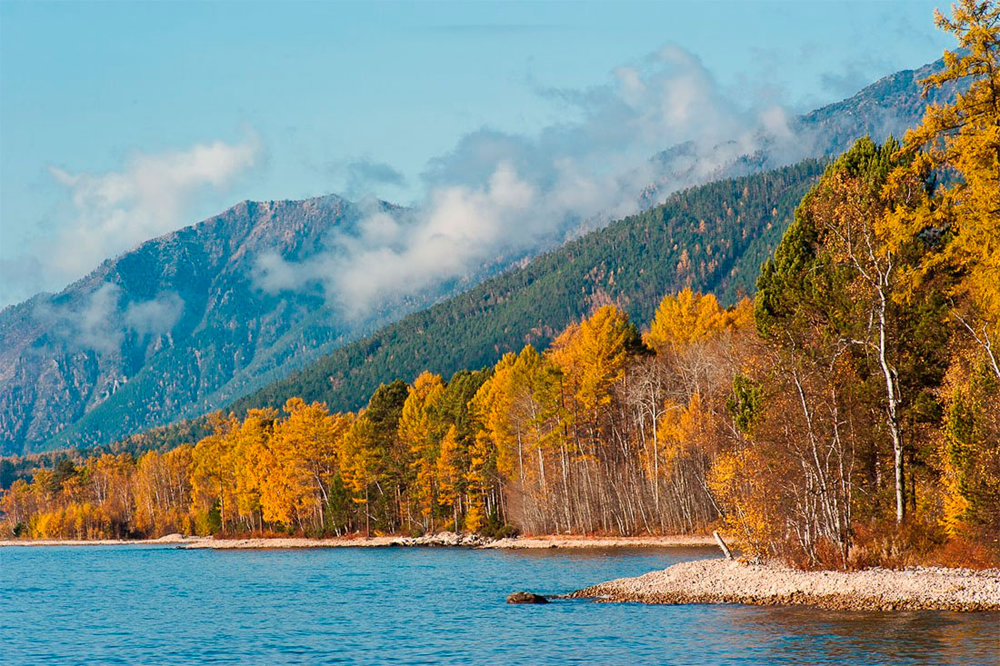
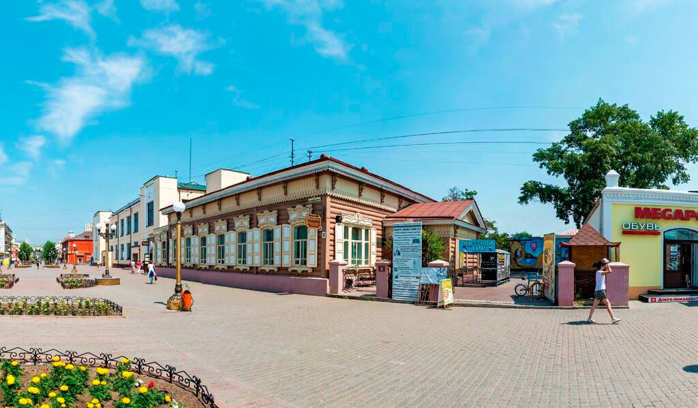
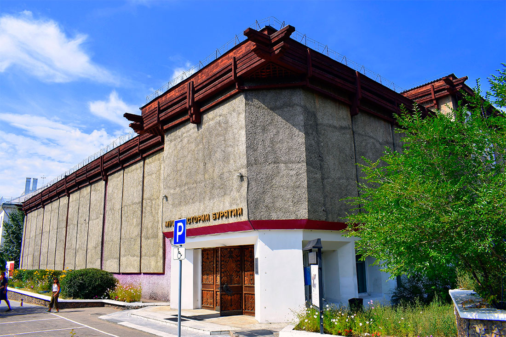

Самая старая городская площадь раньше носила название Базарной, потому что здесь кипела торговля. Район активно застраивался – сначала деревянными, а потом и каменными постройками. В XX веке это пространство стали использовать для митингов, поэтому после установления советской власти площадь получила новое «революционное» имя.
В районе площади расположено несколько каменных зданий постройки XIX века. Район хорошо подходит для прогулок: рядом разбит сквер с фонтаном и скамейками, на которых можно отдохнуть. В парковой зоне установлена оригинальная скульптура «Пенсионер».
3.Этнографический музей народов Забайкалья.
Музей, посвященный этнографии забайкальских народов, находится в пригородном микрорайоне Улан-Удэ – Верхней Березовке. Комплекс, открытый в 1973 году, расположен под открытым небом и занимает около 37 гектаров. На этой площади помещаются несколько десятков памятников архитектуры и более 10 тысяч других экспонатов.
Зачем посещать:
Этнокомплекс стоит посетить всем, кто интересуется историей и традициями Забайкалья. Территория разбита на семь зон, каждая из которых соответствует разным культурам. Например, есть эвенкийская, бурятская и старообрядческая экспозиции, а также комплекс экспонатов, посвященных городской жизни XIX-XX веков.
Формат музея под открытым небом подойдет даже тем, кто не любит традиционные музейные экспозиции. На территории регулярно проводятся тематические игры, выступления этно-коллективов.

4.Баргузинский государственный природный биосферный заповедник имени К.А. Забелина
Государственный национальный парк находится в Баргузинском районе Бурятии. В состав этого заповедника входят территории, прилегающие к Байкалу, а также часть самого озера, в том числе большое лежбище нерпы на Ушканьих островах.
Зачем посещать:
Государственный национальный парк находится в Баргузинском районе Бурятии. В состав этого заповедника входят территории, прилегающие к Байкалу, а также часть самого озера, в том числе большое лежбище нерпы на Ушканьих островах.
Большой интерес представляет животный мир заповедника. Здесь можно наблюдать за байкальской нерпой или северными оленями, увидеть редких птиц – сапсанов и черных аистов. В лесах водятся медведи, волки, лисицы и другие представители забайкальской фауны.

5.Музей истории города Улан-Удэ
Этот музей работает с 2000 года, однако уже успел обзавестись интересными коллекциями. Экспозиции размещаются в историческом районе Улан-Удэ, в отреставрированном доме купца Голдобина.
Зачем посещать:
Круглогодично работают постоянные экспозиции, посвященные жизни Верхнеудинска (старое название города, действовавшее до 1934 года). Посетители музея могут узнать о том, как жили горожане в XVIII-XIX веках и других эпохах. Кроме классических экспозиций действуют интерактивные выставки, проводятся детские и взрослые мастер-классы, открытые дискуссии и другие мероприятия.

6.Музей истории Бурятии им. М.Н. Хангалова
Этот музей работает с 2000 года, однако уже успел обзавестись интересными коллекциями. Экспозиции размещаются в историческом районе Улан-Удэ, в отреставрированном доме купца Голдобина.
Зачем посещать:
В музее истории Бурятии можно увидеть много редких экспонатов. Большая коллекция посвящена буддизму. В 1930-е годы, когда бурятские дацаны массово закрывались, многие реликвии из них попали именно в этот музей. Среди особо ценных экспонатов – уникальный Атлас тибетской медицины, а также множество других редких книг, раритетные иконы и монеты. В коллекциях есть не только бурятские предметы искусства, но и экспонаты из других стран – Японии, Непала, Китая, Монголии.
